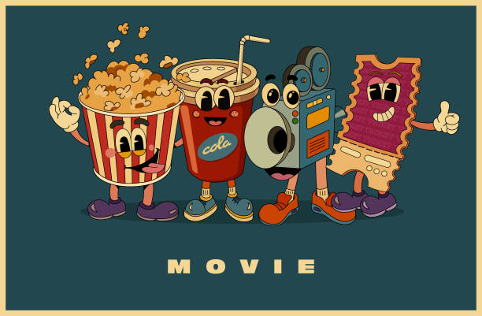

Field or Career
I am currently a freshman at the University of Pittsburgh. My intended major is biology, and I am on the pre-med track. My dream is to become a physician. I want a career where I can make the most of my aptitude and work ethic; one where I can improve peoples’ quality of life. I do not yet know what type of doctor I would like to be, but I know for certain that I do not want to become a surgeon. My family is also a big part of my life. I love my mom, my dad, my younger brother, my younger sister, and my cat and dog a lot.
Additionally, I like movies—watching them with my family and friends is one of my favorite pastimes—which is why, for my encomium essay, I chose “The Matrix” as my artifact. Although the dystopian genre is not my favorite—I like thrillers and romantic-action movies—I still enjoyed analyzing it for my essay. Outside of my friends and family, I tend to dedicate a lot of time to studying. I consider myself a good student and I know that the career I have chosen to pursue is going to take plenty of work and schooling, but it is my dream, and I am determined to succeed.

Encomium: The Matrix

My encomium centers around the movie “The Matrix.” It explores how parallels can be drawn between the dystopian world of “The Matrix” and our world. Mostly, this essay demonstrates how the movie does a good job highlighting why AI should not have (solely) positive connotations.
A Rapid Spread of Misinformation: The Fault Lies With AI and Other Technology
Technology is a significant part of many of peoples’ lives, whether they realize it or not. Personal devices are extremely useful for accessing an enormous amount knowledge within a couple of seconds, and that is wonderful. However, with the introduction of artificial intelligence (AI) and other technologies, it has become even easier to step away from the facts and become lost in the webs of misinformation and perfidy--which can have negative effects on several aspects of peoples' lives. The internet is so saturated with material that it is nearly impossible to fact check every single piece, and this has become a pressing problem for society.
This idea can be tangentially related to a famous part of popular culture: The Matrix—a dystopian, science fiction movie made in 1999. This movie depicts a world, albeit an unrealistic and fictional one, where humans are trapped by an evil AI. They are literally always being fed misinformation by this AI, and it convinces them that they are living in the “real” world, when in fact they are living in a simulation. The overall takeaway of this observation is that the extensive spread of misinformation is never good for society and that in some cases, it is even ruinous.
Misinformation is defined by Merriam Webster as “incorrect or misleading information” (Webster). However, is misinformation really a problem? And if so, why is it such a significant one? According to a 2023 paper titled (Why) Is Misinformation a Problem, misinformation is deeply concerning because it has negative effects on a societal level by impacting social media, politics, science, and economics and causing general pandemonium.
Often times, an exaggerated version of the truth is more entertaining and attention-catching than the authentic truth, and thus it is more likely to be spread by social media users—intentionally or not. As more and more people see, and believe, an untrue post, they “like” and comment on it, which allows it to gain credence. According to a 2020 study, Credibility Perceptions and Detection Accuracy of Fake News Headlines on Social Media: Effects of Truth-Bias and Endorsement Cues, “…headlines associated with a high number of Facebook likes increased credibility, thereby enhancing detection accuracy for real news but undermining [detection] accuracy for fake news” (Luo, 1). Consequently, politics have also been greatly influenced by this rapid spread of disinformation. According to (Why) Is Misinformation a Problem: “…the 20 top fake election-news stories generated more engagement on Facebook than the 20 top election stories from 19 major news outlets combined” (Adams 5). This is particularly dangerous because politics are an absolutely fundamental part of society, and they affect all facets of peoples' lives.
Science and the communication of health recommendations has also been significantly affected by the increase of misinformation due to technology. After being exposed to convincing falsities, people are reluctant to follow pharmaceutical measures, and this can have detrimental impacts on the health of society. One example of disinformation hindering medical care was when people were scared to get vaccinated because of a false claim that the MMR vaccine caused autism: “Negative health behaviors include vaccine hesitancy, which has been most notably related to associations between the measles, mumps and rubella (MMR) vaccine and autism” (Adams 6).
Economics is another area that is vulnerable to misinformation. Of course there has always been, and always will be, speculation about the direction of the stock market, and what companies will be profitable to invest in. However, in the modern-day, it is very easy to publish and/or post a false claim about a company’s failings (especially with the use of AI) that could noticeably drop its stock value. This will only happen however, if the misinformation gains traction, which it has great promise to do if it is seen, believed, and promoted by enough people on social media.
Another crucial factor in the spread of disinformation is the fact that humans are, to put it tersely, very bad at determining whether something is true or not without researching it. This is partially due to the fact that the lies that people encounter can easily appear to be valid if proper context is not provided. Afterall, it is difficult to make an accurate judgement without all the information, doing so be an ultracrepidarian’s approach. Additionally, people do not have a solid, innate, internal compass that points toward the truth. This is mentioned in (Why) Is Misinformation a Problem: “Meta-analyses show that people’s accuracy in lie detection is barely above chance level…catching liars is hard because the validity of behavioral cues to lying is so low” (Adams 8). One interesting example of someone being fooled by a post on social media can be found in a 2024 YouTube video titled I Believed These Four Lies where Hank Green talks about four pieces of misinformation that he was deceived by. The first lie is the following:
“…I saw it on TikTok at animation with, like, a fun song showing how rent and income had dramatically diverged since the 1990s. This aligns with my understanding of how things have gone. And though I was shocked to see how much they had diverged, I did not question it. Turns out, however, that this sentence at the bottom here [It Says: Rent and income are inflation-adjusted] is incorrect. In this graph, income was adjusted for inflation, but rent was not. And that is, like, the majority of the reason that they diverged” (Green 0:27-0:49).
As evidenced by this video, it is easy for someone to be tricked by something if they have not properly fact checked it—it is even inevitable.
However, misinformation has been around for a long time, so why is it such a prevalent problem now? The answer lies (no pun intended) primarily with the introduction of AI. AI has made it incredibly easy for people to fabricate images and videos with little effort. As stated in a 2024 Columbia Business School article called AI-Driven Misinformation: Challenges and Solutions for Businesses, “In the past, misinformation was spread by a select few who wielded influence, but new platforms coupled with AI tools have democratized the practice” (Sperling 1). Graphs of fake data, deep fakes of people doing things that they never did, and images of public figures in places that they never visited are all examples of AI having a big hand in spreading misinformation. As articulated by Cayce Meyers in a Virginia Tech article titled AI and the spread of fake news sites: Experts explain how to counteract them, “Generative AI video and images are so good they cannot be distinguished from actual photographs of real events. Even watermarking and disclosures may not be enough because they can be altered and removed” (Meyers 1).
Additionally—according to AI-Driven Misinformation: Challenges and Solutions for Businesses—AI cannot be trusted to fact check its own, or anyone else’s, work: “We know that AI hallucinates and cannot be trusted fully yet…Long term, it would be like a Wikipedia model for fact checking” (Sperling 2). Even worse, is that it is unclear how AI art and information should be regulated, especially since it has already become such a prevalent part of society. Moreover, AI gathered “facts” are often the first information presented to Google users when they make a search, and sometimes it does not present the full picture which can lead to confusion and/or misinformation.
Overall, AI and personal devices have worsened the spread of misinformation—which severely affects important aspects of society. AI has democratized the ability to make fake graphs, images, and videos that can be posted on social media where they are able to gain traction and credibility through “likes” and comments. Although there is no quick fix to this pertinent issue, social media platforms should absolutely put an effort toward being aware of what is facilitated on their apps. Lastly, individuals, including the readers of this essay, should be more active in fact checking information that has the potential to influence their major, and minor, decisions. Double checking information is invaluable to preventing a distorted a few of reality—that is, after all, what trapped humans in the Matrix for so long.
Works Cited
Adams, Zoë, et al. “(Why) Is Misinformation a Problem?” Perspectives on Psychological
Science: A Journal of the Association for Psychological Science, U.S. National Library of Medicine, 16 Feb. 2023, pmc.ncbi.nlm.nih.gov/articles/PMC10623619/.
Green, Hank. “I Believed These Four Lies.” YouTube, YouTube, 8 May 2024,
www.youtube.com/watch?v=W92bjv8fNTI.
Luo, Mufan. “Credibility Perceptions and Detection Accuracy of Fake News Headlines on
Social Media: Effects of Truth-Bias and Endorsement Cues.” MediaWell, 23 May 2023, mediawell.ssrc.org/citations/credibility-perceptions-and-detection-accuracy-of-fake-news-headlines-on-social-media-effects-of-truth-bias-and-endorsement-cues/.
W“Misinformation Definition & Meaning.” Merriam-Webster, Merriam-Webster,
www.merriam-webster.com/dictionary/misinformation. Accessed 19 Nov. 2024.
Myers, Cayce. “Ai and the Spread of Fake News Sites: Experts Explain How to Counteract
Them.” Virginia Tech News | Virginia Tech, 22 Feb. 2024, news.vt.edu/articles/2024/02/AI-generated-fake-news-experts.html.
Fuller, Margaret. Women in the Nineteenth Century, and Kindred Papers Relating to the Sphere, Condition, and Duties of Women. Ed. Arthur B. Fuller. 1874. New York, Greenwood Press. 1968.
Rose, Anne. Transcendentalism as a Social Movement, 1830-1850. New Haven and London: Yale University Press. 1981.
Pets

As mentioned in the introduction, I have two pets: a cat and a dog. My cat’s name is Bella and my dog’s name is Freckles (we did not get to choose the name). Bella is a typical cat: she loves to play; she likes to hunt, although she is not gifted at it; and she likes to sit on laps—she’s not good at this either. Freckles, however, is a trained service dog, and he is very well behaved. He follows commands without hesitation, but when he is not working, he is as playful as any other dog. They are both very sweet, and I miss them a lot now that I am at college.
Hobbies
Outside of watching movies and studying, I have a few hobbies. One of them is baking. I love to decorate cakes and make cookies. Some of my favorite things to create are black and white cookies, lemon cookies, strawberry bread, banana bread, chocolate cake, lemon cake, cupcakes, and apple pie (with a lattice top). I also enjoy doing origami. I find it to be relaxing, and I like the feeling of accomplishment that I get when I am done. I mostly focus on making animals and flowers, but I have also made pumpkins and ghosts (for Halloween). My favorite animals to make are monkeys and parrots because they look complicated but are not very difficult to create. Some of my other hobbies include reading, drawing (I am an amature), and collecting Legos (I have a whole bookshelf full of them at home). I think that it is important for me to maintain these hobbies because it is crucial to have a good balance between work and fun/relaxing activities.